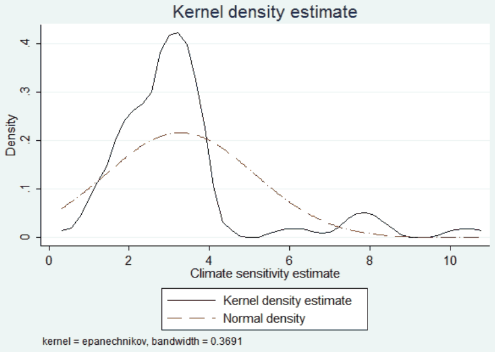
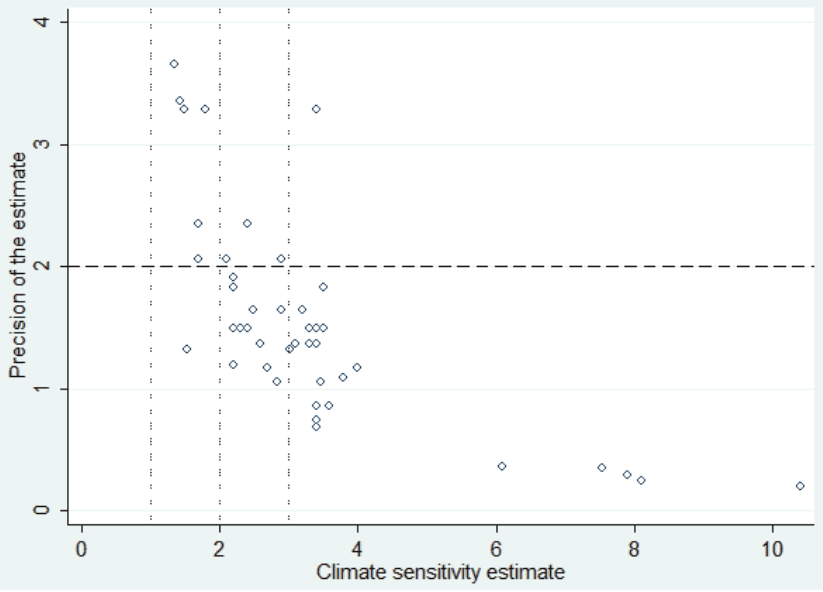
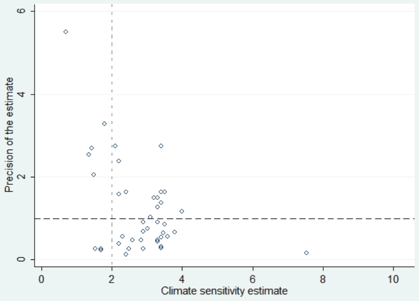

Publication Bias in Measuring Anthropogenic Climate Change
Dominika Reckova and Zuzana Irsova (2015), "Publication Bias in Measuring Anthropogenic Climate Change." Energy and Environment 26 (5), 853-862. https://doi.org/10.1260/0958-305x.26.5.853.
Dominika Reckova* and Zuzana Irsova
Charles University, Prague
*Corresponding author: Dominika Reckova, 91670243@fsv.cuni.cz. Zuzana Irsova acknowledges support from the Czech Science Foundation (grants #15-02411S and #P402/11/0948); Dominika Reckova acknowledges support from the Grant Agency of Charles University (grant #558713).
Abstract
We present a meta-regression analysis of the relation between the concentration of carbon dioxide in the atmosphere and changes in global temperature. The relation is captured by “climate sensitivity,” which measures the response to a doubling of carbon dioxide concentrations compared to pre-industrial levels. Estimates of climate sensitivity play a crucial role in evaluating the impacts of climate change and constitute one of the most important inputs into the computation of the social cost of carbon, which reflects the socially optimal value of a carbon tax. Climate sensitivity has been estimated by many researchers, but their results vary significantly. We collect 48 estimates from 16 studies and analyze the literature quantitatively. We find evidence for publication selection bias: researchers tend to report preferentially large estimates of climate sensitivity. Corrected for publication bias, the bulk of the literature is consistent with climate sensitivity lying between 1.4 and 2.3˚C.
Keywords: Climate sensitivity, climate change, CO2, publication bias, meta-analysis
JEL Codes: Q53, Q54, C42
1. INTRODUCTION
Hundreds of researchers have tried to estimate the influence of human beings on climate change. We focus on estimates of equilibrium climate sensitivity, often simply termed climate sensitivity (CS), which is basically a measure of the climatic response to a doubling of concentrations compared to pre-industrial levels (Solomon et al. 2007). These estimates play a crucial role in evaluating the impacts of anthropogenic climate change and constitute one of the most important inputs into the computation of the social cost of carbon, which reflects the socially optimal value of a carbon tax. Researchers report diverse results across studies, though the estimate of climate sensitivity most frequently oscillates around 3˚C.
Our main objective is to find out, based on a collected data sample of published estimates, whether the reported estimates of climate sensitivity suffer from publication bias. No such analysis has previously been published. The 48 CS estimates collected from 16 studies range from 0.7 to 10.4, with a mean of 3.27. We summarize and quantify the reported estimates using meta-regression analysis (MRA). To avoid possible problems in the MRA we focus on a narrow definition of climate sensitivity. The analysis is based on the assumption that the reported estimates are not correlated with their standard errors. Graphical tests reveal that such a relationship is present, indicating publication selection bias at first glance. We provide a broader analysis by employing ordinary least squares (OLS), weighted least squares (WLS), fixed-effects (FE), and mixed-effects multilevel regressions of the CS estimates on their standard errors. We check for asymmetry of distribution of the CS estimates, which could give a false impression of publication bias, and also analyze subsets of median and mean CS estimates separately. Aside from that, we estimate the underlying effect of climate sensitivity corrected for publication bias.
The main contribution of this study is that it provides a quantitative survey of climate sensitivity estimates. Governments worldwide spend huge amounts of money on natural research, technological research and development, and so on to reduce greenhouse gas emissions and avoid man-made global warming. The results of this analysis could influence current policy decisions, which concentrate in first place on cutting emissions.
The rest of this paper is organized as follows: Section 2 introduces the issue of climate sensitivity and publication bias; Section 3 summarizes data set collection; Section 4 refers to graphical methods for the detection of publication bias; Section 5 presents the results; and Section 6 concludes. Details on the analysis are available in the online appendix (Reckova & Irsova 2015).
2. CLIMATE SENSITIVITY AND PUBLICATION BIAS
Not all empirical studies provide a precise definition of climate sensitivity, but many give the definition as the change from pre-industrial levels. The character of the data used in the studies indicates that the two definitions given above are saying the same thing and that the estimates collected are therefore all comparable with each other.
The fifth assessment report of the Intergovernmental Panel on Climate Change (IPCC) predicts that climate sensitivity probably ranges from 1.5 to 4.5 with high confidence and is extremely unlikely to be lower than 1, again with high confidence (Stocker 2013). For comparison, the IPCC’s third assessment report estimates that climate sensitivity “likely” ranges between 2 and 4.5 and is “very unlikely” to be less than 1.5 (Pachauri & Reisinger 2007). Andronova & Schlesinger (2001) disagree with the third IPCC report and argue that climate sensitivity lies with 54% likelihood outside the IPCC range. They find that the 90% confidence interval for CS is 1 to 9.3.
There is evidence for potential publication bias in climate research. Masters (2013) notes a robust relationship between the modeled rate of heat uptake in global oceans and the modeled climate sensitivity. This signals that researchers could have ways of influencing their results. We apply a common tool, meta-regression analysis, to detect publication bias in the literature about climate sensitivity. Michaels (2008) analyses 116 issues of two journals that forecast climate change: Science and Nature. Through vote-counting he found bias towards “worse” results. Publication bias in other fields of empirical research has been documented, for example, by (Havranek & Irsova 2010; Havranek 2010; Havranek & Irsova 2011; Havranek et al. 2012; Havranek 2015; Rusnak et al. 2013; Havranek & Sedlarikova 2014; Valickova et al. 2015; Havranek & Kokes 2015).
Publication bias arises from the preference of researchers for some particular results. Both the scientist and the journal editor may only want to publish attractive or reliable results. Their motivations to bias the results or publish only selected results are similar: first, the selection of significant estimates (type II bias in the terminology of Stanley 2005), and second, the selection of estimates with intuitive magnitude (type I bias). Publishing only selected results is called the “file drawer problem” (Rosenthal 1979). Although the selection of significant estimates is more benign (Stanley 2005), it still causes publication bias and precludes an accurate overview of the problem (De Long & Lang 1992).
3. DATA
We collect all available estimates of CS reported in published papers and also codify 13 variables reflecting the context in which researchers obtain their estimates of climate sensitivities, including information about the character of the estimate. The literature provides multiple types of climate sensitivity estimates. For the analysis, we use only one type of estimate from each study in this preference order: mean, median, mode, best estimate.
A total of 16 published papers provide 49 estimates of climate sensitivity. However, we decide to exclude one estimate of infinity, which would bias the meta-analysis. It comes from a study with multiple estimates computed using different models, and even the study itself fails to explain how it is possible to have a value of infinity. All 16 papers included are listed in the online appendix. The estimates of climate sensitivity range from 0.7 to 10.4, with an average of 3.27.
Figure 1 depicts the kernel density of the estimated climate sensitivity with the use of the Epanechnikov kernel. It indicates that the distribution is skewed. The right tail of the distribution is much longer than the left one. A common assumption made in meta-analysis is that in the absence of bias the estimates are normally distributed around the hypothetical true effect (Stanley 2001). Figure 1 depicts the normal density as a long-dash dot line for comparison.

4. GRAPHICAL TESTS OF PUBLICATION BIAS
Figure 2 depicts the funnel plot for the estimate of climate sensitivity using the standard error constructed with the lower tail of the confidence interval, and Figure 3 shows the same using the construction with the upper tail. The funnels are heavily asymmetrical: the left-hand side of the funnels is almost completely missing; hence we have good reason to believe that publication selection bias is strong in this literature.


In Figure 2 the dotted lines pick out climate sensitivity with magnitudes 1, 2, and 3, while the dashed line represents precision 2 (that is, standard error 0.5). With increasing precision the estimates converge to climate sensitivity 1. Most of the estimates lie between 2 and 4, with quite low precision between 0.6 and 2. The most precise estimates differ in magnitude: one of them predicts climate sensitivity at around 3.5, while four predict it between 1 and 2. Although the magnitude of the climate sensitivity estimates varies, Figure 2 clearly displays the relationship between the estimates and their precision: the higher the precision, the lower the estimate of climate sensitivity. In the absence of publication bias these figures should look like an inverted funnel. However, Figure 2 depicts only the right-hand side of the inverted funnel and the left-hand side is completely missing, indicating publication bias.
Figure 3 represents a check whether the situation is similar with the use of the standard error constructed from the upper bound of confidence interval. Figure 3 again signals publication bias, since the left-hand side of the inverted funnel is missing. The relationship between the estimates and their standard errors, however, is not so straightforward in Figure 3 as in previous figures. Estimates with very low precision (lower than 1, which means standard error higher than 1) converge with increasing precision to a CS value of 4. However, the high-precision estimates range around a CS of 2 and increase with decreasing precision.
5. DISCUSSION OF THE RESULTS
The econometric analysis, described in detail in the online appendix, yields interesting results. Although the estimates of climate sensitivity should not be correlated with their standard errors in the absence of publication bias, 14 models indicate the opposite. Publication bias is present in the climate sensitivity literature at least at the 5% significance level. Unfortunately, the analysis cannot precisely identify the reasons for such bias. Researchers and journal editors may be displaying selectivity in publishing only significant or preferred magnitude estimates.
In the studies in our sample, researchers report their estimates of climate sensitivity in the form of means, medians, modes or best estimates (here, “best” means as decided by the researchers without specifying whether the estimate is the mean, the median or anything else). Even their decision on what to report is fundamental. Mean or median estimates are reported most commonly, but only 11 studies state both of them. The mean estimates in the sample are higher than the median estimates on average. At the same time, the magnitude of median estimates reported together with mean estimates is lower on average than that of median estimates reported alone. This suggests that researchers tend to report higher estimates because of their magnitude or in order to achieve higher significance, since the higher the t-statistic the higher the significance level, and the t-statistic is computed as the ratio of the estimate to its standard error.
Both the mixed-effects and WLS models on the mean and median subsets indicate serious publication bias. According to the mean estimates the publication bias () is 4 at least at the 1% significance level, and according to the median estimates is 2 at least at the 5% significance level. In the online appendix we additionally control for the different methods used in the estimation of climate sensitivity, which is commonly done in meta-analysis to evaluate the robustness of results (Irsova & Havranek 2010; Havranek & Irsova 2012; Havranek & Rusnak 2013; Irsova & Havranek 2013b;a; Babecky & Havranek 2014; Havranek et al. 2015), but the robustness checks corroborate the results reported here.
As expected, after we create funnel plots for the whole data set, the meta-regression identifies upward publication selection bias significant at least at the 1% level for all the models applied. In all specifications the intensity of publication bias, , ranges between 1.8 and 3. Such magnitude of publication bias signals serious selection efforts. Doucouliagos & Stanley (2013) regard a FAT result of higher than 2 in absolute terms as “severe” selectivity: if the true climate sensitivity was zero and only statistically significant estimates of climate sensitivity were reported, the estimated coefficient of publication bias would be approximately 2 as the most common critical value of the t-statistic. The publication bias in this literature is hence strong enough to produce a significant average estimate of climate sensitivity that is much higher than the true value. Table 1 summarizes the results. The models provide similar estimates of the true climate sensitivity: 1.3 (WLS), 1.6 (ME), and 2.1 (FE).
| Response variable: t-statistic | ME | Clustered OLS | Clustered FE |
|---|---|---|---|
| 1/SE (true CS) | 1.617*** | 1.276*** | 2.087*** |
| (0.19) | (0.316) | (0.086) | |
| mean/SE | -1.074*** | -0.732** | -1.55*** |
| (0.183) | (0.286) | (0.079) | |
| SE | -0.234* | -0.316*** | -0.226*** |
| (0.132) | (0.086) | (0.017) | |
| Constant (bias) | 2.5*** | 3.054*** | 2.353*** |
| (0.369) | (0.232) | (0.068) | |
| Observations | 48 | 48 | 48 |
| Likelihood-ratio test () | 8*** | ||
| 0.728 | 0.647 |
Notes: Standard errors are shown in parentheses and clustered at the study level. ME denotes mixed-effects multilevel, OLS ordinary least squares, and FE fixed-effects regression. Null hypothesis for the likelihood-ratio test : no between-study heterogeneity (that is, mixed-effects multilevel has the same benefit as OLS). ***, **, and * denote statistical significance at the 1%, 5%, and 10% level.
After correction for publication bias, the best estimate assumes that the mean climate sensitivity equals 1.6 with a 95% confidence interval (1.246, 1.989). This is one half of the simple uncorrected average, 3.27: the publication bias contains the estimate of the true CS approximately two times. Out of the 48 collected estimates, five are smaller than or equal to the average true effect; the lowest estimate is 0.7. This means that almost half of the estimates of climate sensitivity may be put into the “file drawer.”
The results of this meta-analysis provide strong evidence of publication bias, and the estimated true effects do not significantly differ either. Table 2 compares the estimated true sensitivities across the model specifications. The estimates of the true CS range between 1.4 and 2.3 in the extreme cases, and the average is 1.74. That is very close to the preferred mixed-effects model estimate of 1.6, so there is good reason to believe that the result is robust.
6. CONCLUSION
We consider climate sensitivity as an indicator and apply mixed-effects multilevel meta-regression to estimate potential publication selection bias and the underlying mean effect. The results confirm that publication bias is strong in this literature. After correction for the bias, the estimated true effect of climate sensitivity is approximately one half of the simple mean of all the estimates in the collected sample of literature. If the simple mean reflects climate scientists’ impression of the magnitude of climate sensitivity, that impression exaggerates the true climate sensitivity two times.
The estimated climate sensitivity corrected for publication bias is approximately 1.6. Though meta-regression analysis is generally considered to be a statistically efficient tool, the corrected climate sensitivity estimate is a reference value. It averages across many methods, primary data sets, and factors influencing CS, and if there is another aspect influencing all the studies, this MRA will also be biased. The level of uncertainty in the prediction of climate sensitivity is high and is influenced by a huge number of factors. We tried to check for as many aspects as we could, but sometimes it was not possible to take them all into account. Still, publication selectivity is substantial in this literature, since its intensity in the full data set is around 2 and in the models corrected for heteroscedasticity and heterogeneity it approaches 4. This means that the literature may produce significant estimates of climate sensitivity that are twice as high as the true effect.
| Specification model: | True climate sensitivity |
|---|---|
| OLS | 1.692*** |
| (0.138) | |
| clustered OLS | 1.692*** |
| 0.177 | |
| clustered WLS | 1.425*** |
| (0.3) | |
| clustered WLS with dummy variables | 1.476*** |
| (0.309) | |
| clustered WLS: correction of publication bias | 1.276*** |
| (0.316) | |
| mixed-effects | 1.689*** |
| (0.188) | |
| mixed-effects with dummy variables | 1.74*** |
| (0.187) | |
| mixed-effects: correction of publication bias | 1.617*** |
| (0.19) | |
| fixed-effects | 2.15*** |
| (0.085) | |
| fixed-effects with dummy variables | 2.255*** |
| (0.099) | |
| fixed-effects: correction of publication bias | 2.087*** |
| (0.086) |
Notes: Standard errors are shown in parentheses and clustered at the study level. *** denotes statistical significance at the 1% level.
Predictions of climate change caused by humans influence policy decisions in most nations. Current environmental policy across many nations is focused on reducing emissions of greenhouse gases, especially . For instance, the EU aims to cut emissions by 20% by 2020 compared to 1990 (EU 2014). Other countries and territories, such as New Zealand, Australia, and Quebec in Canada, aim to reduce emissions by implementing Emission Trading Systems (OECD 2013). The US government has formed a special authority to investigate the social cost of carbon (SCC). It estimates the SCC as the economic damages associated with a small increase in emissions, that is, it puts a dollar figure on the benefit of a small reduction in emissions (EPA 2013). The SCC measures the benefit of implementing a policy to reduce emissions and can be understood as the amount of money spent on agriculture, human health and so on as a result of climate change caused by a small increase in emissions. This is exactly what climate sensitivity represents, since the SCC is calculated on the basis of the climatic response to an increase in emissions. It is possible that policy targets would be different if researchers used lower climate sensitivities. A lower estimate of climate sensitivity would imply a lower estimate of the social cost of carbon. This, in turn, would influence the amount spent on reducing carbon dioxide in the atmosphere.
REFERENCES
Some entries below were printed without a link. Where a Crossref record matches one and no other record plausibly could, its DOI is shown; ambiguous references are left as they were printed.
- Andronova, N. G. & M. E. Schlesinger (2001): “Objective estimation of the probability density function for climate sensitivity.” Journal of Geophysical Research: Atmospheres (1984–2012) 106(D19): pp. 22605–22611. 10.1029/2000jd000259
- Babecky, J. & T. Havranek (2014): “Structural reforms and growth in transition.” The Economics of Transition 22(1): pp. 13–42. 10.1111/ecot.12029 Full text on this site
- De Long, J. B. & K. Lang (1992): “Are all economic hypotheses false?” Journal of Political Economy 100: pp. 1257–1257. 10.1086/261860
- Doucouliagos, C. & T. Stanley (2013): “Are all economic facts greatly exaggerated? Theory competition and selectivity.” Journal of Economic Surveys 27(2): pp. 316–339. 10.1111/j.1467-6419.2011.00706.x
- EPA (2013): “The social cost of carbon.” http://www.epa.gov/climatechange/EPAactivities/economics/scc.html. [cit. 2014-05-07].
- EU (2014): “Eu greenhouse gas emissions and targets.” http://ec.europa.eu/clima/policies/ggas/index_en.htm/. [cit. 2014-05-01].
- Havranek, T. (2010): “Rose effect and the euro: is the magic gone?” Review of World Economics 146(2): pp. 241–261.
- Havranek, T. (2015): “Measuring intertemporal substitution: The importance of method choices and selective reporting.” Journal of the European Economic Association (forthcoming).
- Havranek, T., R. Horvath, Z. Irsova, & M. Rusnak (2015): “Cross-Country Heterogeneity in Intertemporal Substitution.” Journal of International Economics 96(1): pp. 100–118. 10.1016/j.jinteco.2015.01.012 Full text on this site
- Havranek, T. & Z. Irsova (2010): “Meta-Analysis of Intra-Industry FDI Spillovers: Updated Evidence.” Czech Journal of Economics and Finance (Finance a uver) 60(2): pp. 151–174.
- Havranek, T. & Z. Irsova (2011): “Estimating vertical spillovers from FDI: Why results vary and what the true effect is.” Journal of International Economics 85(2): pp. 234–244. 10.1016/j.jinteco.2011.07.004 Full text on this site
- Havranek, T. & Z. Irsova (2012): “Survey Article: Publication Bias in the Literature on Foreign Direct Investment Spillovers.” Journal of Development Studies 48(10): pp. 1375–1396. 10.1080/00220388.2012.685721
- Havranek, T., Z. Irsova, & K. Janda (2012): “Demand for gasoline is more price-inelastic than commonly thought.” Energy Economics 34(1): pp. 201–207. 10.1016/j.eneco.2011.09.003 Full text on this site
- Havranek, T. & O. Kokes (2015): “Income elasticity of gasoline demand: A meta-analysis.” Energy Economics 47(C): pp. 77–86. 10.1016/j.eneco.2014.11.004 Full text on this site
- Havranek, T. & M. Rusnak (2013): “Transmission Lags of Monetary Policy: A Meta-Analysis.” International Journal of Central Banking 9(4): pp. 39–76.
- Havranek, T. & J. Sedlarikova (2014): “A Meta-Analysis of the Income Elasticity of Money Demand.” Politicka ekonomie 2014(3): pp. 366–382.
- Irsova, Z. & T. Havranek (2010): “Measuring Bank Efficiency: A Meta-Regression Analysis.” Prague Economic Papers 2010(4): pp. 307–328.
- Irsova, Z. & T. Havranek (2013a): “Determinants of Horizontal Spillovers from FDI: Evidence from a Large Meta-Analysis.” World Development 42(C): pp. 1–15.
- Irsova, Z. & T. Havranek (2013b): “Meta-Analysis of Bank Efficiency Measurement in Transitional Countries.” Transformations in Business and Economics 12(2): pp. 163–183.
- Masters, T. (2013): “Observational estimate of climate sensitivity from changes in the rate of ocean heat uptake and comparison to cmip5 models.” Climate Dynamics pp. 1–9. 10.1007/s00382-013-1770-4
- Michaels, P. J. (2008): “Evidence for ‘publication bias’ concerning global warming in science and nature.” Energy & environment 19(2): pp. 287–301. 10.1260/095830508783900735
- OECD (2013): “Climate and carbon aligning prices and policies.” 01: pp. 11–23.
- Pachauri, R. K. & A. Reisinger (2007): Climate Change 2007 Synthesis Report: Summary for Policymakers. IPCC Secretariat.
- Reckova, D. & Z. Irsova (2015): “Additional Results to ‘Publication Bias in Measuring Anthropogenic Climate Change’.” Technical report, Charles University, Prague. Available at meta-analysis.cz/climate. 10.1260/0958-305x.26.5.853
- Rosenthal, R. (1979): “The file drawer problem and tolerance for null results.” Psychological bulletin 86(3): p. 638. 10.1037/0033-2909.86.3.638
- Rusnak, M., T. Havranek, & R. Horvath (2013): “How to Solve the Price Puzzle? A Meta-Analysis.” Journal of Money, Credit and Banking 45(1): pp. 37–70. 10.1111/j.1538-4616.2012.00561.x Full text on this site
- Solomon, S., D. Qin, M. Manning, Z. Chen, M. Marquis, K. Averyt, M. Tignor, & H. Miller (2007): “Ipcc, 2007: climate change 2007: the physical science basis.” Contribution of Working Group I to the fourth assessment report of the Intergovernmental Panel on Climate Change.
- Stanley, T. D. (2001): “Wheat from chaff: Meta-analysis as quantitative literature review.” Journal of economic perspectives pp. 131–150. 10.1257/jep.15.3.131
- Stanley, T. D. (2005): “Beyond publication bias.” Journal of Economic Surveys 19(3): pp. 309–345. 10.1111/j.0950-0804.2005.00250.x
- Stocker, D. Q. (2013): “Climate change 2013: The physical science basis.” Working Group I Contribution to the Fifth Assessment Report of the Intergovernmental Panel on Climate Change, Summary for Policymakers, IPCC .
- Valickova, P., T. Havranek, & R. Horvath (2015): “Financial Development and Economic Growth: A Meta-Analysis.” Journal of Economic Surveys 29(3): pp. 506-526. 10.1111/joes.12068 Full text on this site